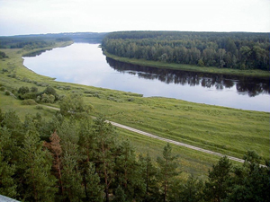

Upes latviešu nosaukums „Daugava” un lietuviešu „Dauguva” ir cēlies no seniem baltu vārdiem „daudz” un „ūdens”.Vairumā citu valodu lietotais nosaukums Dyna — Двина — Дзьвіна — Dźwina — Düna — Dvina cēlies no Baltijas somu valodās lietotā upes nosaukuma Vīna-Väina (līvu: vēna — 'jūras šaurums'; 'osta', 'upes ieteka jūrā'). Šis nosaukums visagrāk pieminēts vikingu sāgās un Nestora hronikā. Kādā vikingu rūnakmenī nosaukta par Tūnu, ko vācu tirgotāji saukuši par Dune vai Dīnu, bet senie slāvi par Dveinu un Dvinu.
Klaudija Ptolemaja 2. gadsimtā veidotajā kartē redzams Rīgas jūras līcis un tajā ietekošā upe Rubona. Tā sauktais ziemeļu jeb dzintara ceļš Romas impērijai bija visnotaļ pazīstams, jau sengrieķu dzejnieki bija apjūsmojuši upi vārdā Eridāna.Grieķu teika stāsta, ka pa Eridānu mājup no brauciena pa Melno jūru atgriezušies argonauti. Tā gan ir tikai viena no versijām par argonautu mājupceļu, parastākais viedoklis ir tāds, ka argonauti nav atstajuši Melnās jūras baseinu un Balkānus. Par Eridānu parasti pieņem Padas upi, ko tagad sauc par Po un kas tek Itālijas ziemeļos. Tomēr pastāv arī viedoklis, ka mītā par Faetonu, epizodē, kurā Zeva zibens notriektais Faetons iekrīt Eridānas upē, pēc dažu pētnieku uzskatiem ar Eridānas upi var identificēt Daugavu, un pats notikums saistāms ar meteorīta nokrišanu Sāmsalā (Kāli meteorīta krāteri). Grieķu rakstītajos avotos Eridāna minēta kā upe tālu ziemeļos, kurā bagātīgi tiek atrasts dzintars.